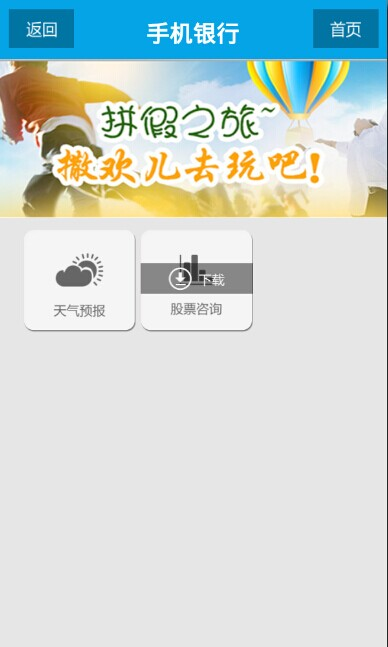
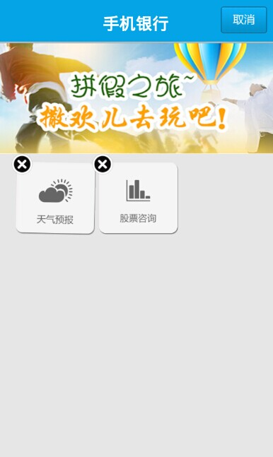
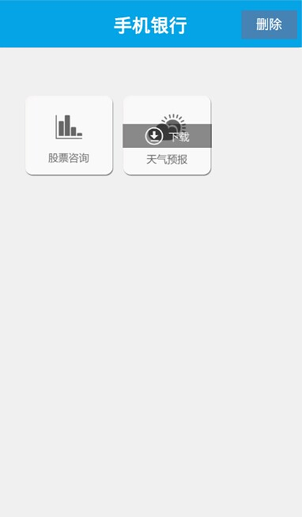
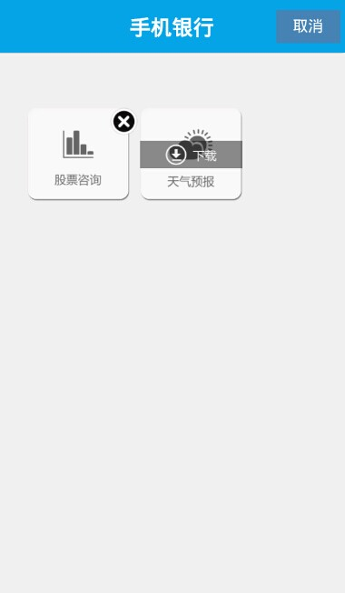

图一

图二

上图所示为标准银行中的非基础业务界面，该页面包含天气预报和股票咨询两个频道，它们是可选下载的插件资源。如图一中，天气预报频道为已下载的状态，股票咨询频道为未被下载的状态。当点击下载按钮时插件被下载，下载完成后能够进入该频道。长按按钮可以进入如图二所示的删除模式，点击x形按钮可以删除插件，点击标题栏上的取消按钮退出删除状态。本节的重点是说明如何判断离线资源是否已被下载，同时通过示例讲述怎样实现离线资源的下载、删除。


如图所示为本节的示例效果图，我们效仿标准银行的非基础业务界面，实现了判断插件是否已被下载、下载插件、删除插件、进入频道等功能，但与标准银行中的界面不完全相同，我们通过点击标题栏上的删除按钮进入删除状态，此时删除按钮变为取消按钮，点击取消按钮退出删除状态。
示例的完整代码链接为：download_judge.xml
离线资源协议有两个版本，EMP5.2 之前的旧协议版本号定义为0，EMP5.2 及以后的新协议版本号定义为1。新旧协议支持的lua接口不同，而我们在写脚本时需要同时兼容两个版本，故示例代码中定义了"offline_version"变量标识离线协议的版本。下面我们按功能介绍需要用到的接口：
offline:optDownloadJsonInLocal()，它返回的列表为json字符串形式，不包含校验hash值；offline:getOptInfoInLocal()，它返回的列表为table类型。offline:optDownloadJson()，它获得当前本地保存的服务器描述文件(server.desc)中所有可选文件描述信息的json字符串；offline:getOptInfoInServer()，它获得当前本地保存的服务器描述文件(server.desc)中所有可选文件描述信息的table。offline:downfile(filename, relatedPath, callback)；offline:downOptionalFile(filename, callback)。offline:remove(name)；offline:removeOptionalFile(filaname)。以上函数的详细区别及用法请参照离线资源协议客户端设计文档中的客户端lua接口说明。
在示例的界面中，每个频道需要有三个按钮：频道按钮("stock"、"weather_forcast")，下载按钮("download_stock"、"download_weather_forcast")，删除按钮("del_stock"、"del_weather_forecast")。"stock.zip"和"weather_forcast.zip"是离线资源文件中记录的插件资源id，以插件资源名称命名控件是为了便于后续对资源进行判断。
页面报文的代码片段如下：
<content>
<head>
<style>
.body{width:320px;height:460px;background-color:#F0F0F0;}
.table_title{left:0px;top:0px;width:320px;}
.tr_title{height:51px;background-image:url(title_bg.png);}
.td_title{width:320px;}
.label_title{width:320px;text-align:center;font-size:19px;font-weight:bold;color:#FFFFFF;}
.button_delete{left:255px;width:58px;height:30px;color:#FFFFFF;font-size:14px;background-color:#4682B4;}
.menu_div{left:0px;top:100px;height:278px;width:320px;}
.menu_stock{left:30px;top:0px;width:93px;height:85px;background-image:url(stock.png);}
.download_stock{left:30px;top:30px;width:93px;height:25px;background-image:url(offline-download.png);display:none;}
.del_stock{left:105px;top:0px;width:25px;height:25px;background-image:url(menu_delete_button.png);display:none;}
.menu_weather{left:132px;top:0px;width:93px;height:85px;background-image:url(weather_forecast.png);}
.download_weather{left:132px;top:30px;width:93px;height:25px;background-image:url(offline-download.png);display:none;}
.del_weather{left:207px;top:0px;width:25px;height:25px;background-image:url(menu_delete_button.png);display:none;}
</style>
<script src="unit_fun.lua"></script>
<script type="text/x-lua">
...
</script>
</head>
<body class="body">
<!--Title-->
<table class="table_title">
<tr class="tr_title" >
<td class="td_title" align="center" valign="middle">
<label class="label_title">手机银行</label>
<input type="button" class="button_delete" name="del_button" value="删除" onclick="delete_and_cancel()"/>
</td>
</tr>
</table>
<!--MainMenu 主菜单-->
<div class="menu_div" name="div_menu" border="0">
<input type="button" class="menu_stock" name="stock" onclick="post_channel('stock')"></input>
<input type="button" class="del_stock" name="del_stock" onclick="delete_channel('stock')"></input>
<input type="button" class="download_stock" name="download_stock" onclick="download_channel('stock')"></input>
<input type="button" class="menu_weather" name="weather_forecast" onclick="post_channel('weather_forecast')"></input>
<input type="button" class="del_weather" name="del_weather_forecast" onclick="delete_channel('weather_forecast')"></input>
<input type="button" class="download_weather" name="download_weather_forecast" onclick="download_channel('weather_forecast')"></input>
</div>
</body>
</content>
进入界面之前需要首先根据插件是否被下载设置下载条按钮的显隐。
判断某控件是否已被下载的步骤如下：
如在示例的代码中：
refresh_download_json()函数通过离线协议接口获得了本地已下载插件的列表optDownloadLocal。注意：调用接口需分新旧两个协议版本，旧版本协议调用offline:optDownloadJsonInLocal()需要将json字符串转换为table类型。
代码片段如下：
<script type="text/x-lua">
...
--离线协议版本
local offline_version = tostring(offline:version());
--本地已经下载的可选插件列表
local optDownloadLocal;
--[[刷新本地下载插件列表]]--
local function refresh_download_json()
if offline_version == "0" then
local downloadLocal = offline:optDownloadJsonInLocal();
optDownloadLocal = json:objectFromJSON(downloadLocal);
else
optDownloadLocal = offline:getOptInfoInLocal();
end;
end;
...
</script>
check_download(sender)函数判断某个控件是否已被下载：获取要检测的控件sender的名称，遍历本地已下载的插件列表 optDownloadLocal，若列表中插件名称与sender名称相同，则说明插件已下载返回true，否则插件未被下载返回false。
代码片段如下：
<script type="text/x-lua">
...
--[[
@doc:检测某个控件是否已经下载
@params:
sender:控件对象
--]]
local function check_download(sender)
local check_value="false";
local sender_name = sender:getPropertyByName("name");
--遍历本地下载的可选插件列表
for key,value in pairs(optDownloadLocal) do
--download_name为除去后缀.zip后的插件名称
local download_name = string.sub(key,0,string.len(key)-4);
local ctrl = document:getElementsByName(download_name);
if ctrl and #ctrl then
if download_name == sender_name then
check_value="true";
end;
end;
end;
return check_value;
end;
...
</script>
set_download_style()函数根据check_download()函数返回的值设置下载条按钮的显隐。
代码片段如下：
<script type="text/x-lua">
...
--[[
@doc:根据名称改变控件样式
@params:
name:控件名称
style:样式名称，比如："display"
value:修改值，需要将控件样式修改的值
]]--
local function changeStyle(name,style,value)
local ctrl = document:getElementsByName(name);
if ctrl and #ctrl > 0 then
for key,ctrl_atom in pairs(ctrl) do
ctrl_atom:setStyleByName(style,value);
end;
else
window:alert(name .. "控件不存在！");
end;
end;
--[[
@doc:根据名称改变控件属性
@params:
name:控件名称
property:属性，比如："enable"
value:修改值，需要将控件属性修改的值
]]--
local function changeProperty(name,property,value)
local ctrl = document:getElementsByName(name);
if ctrl and #ctrl > 0 then
for key,ctrl_atom in pairs(ctrl) do
ctrl_atom:setPropertyByName(property,value);
end;
else
window:alert(name .. "控件不存在！");
end;
end;
--[[检查是否显示下载按钮]]--
local function set_download_style()
local ctrl_stock = document:getElementsByName("stock");
if ctrl_stock and #ctrl_stock > 0 then
local check_value = check_download(ctrl_stock[1]);
--插件未下载显示下载按钮并设置频道按钮不可点击
if check_value=="false" then
changeStyle("download_stock","display","block");
changeProperty("stock","enable","false");
end;
end;
local ctrl_weather = document:getElementsByName("weather_forecast");
if ctrl_weather and #ctrl_weather > 0 then
local check_value = check_download(ctrl_weather[1]);
--插件未下载显示下载按钮并设置频道按钮不可点击
if check_value=="false" then
changeStyle("download_weather_forecast","display","block");
changeProperty("weather_forecast","enable","false");
end;
end;
end;
...
</script>
下面说明其他各函数的功能：
<script type="text/x-lua">
...
--[[检查已下载插件个数]]--
local function check_download_num()
--刷新本地下载插件列表
refresh_download_json();
--已下载插件个数
local check_num = 0;
--本地已经下载的可选插件的json字符串。
for key,value in pairs(optDownloadLocal) do
local download_name = string.sub(key,0,string.len(key)-4);
local ctrl = document:getElementsByName(download_name);
if ctrl and #ctrl > 0 then
check_num = check_num + 1;
end;
end;
return check_num;
end;
...
</script>
delete_and_cancel(): 进入或取消删除状态。
该函数响应标题栏中的删除按钮的点击事件。我们定义了一个flag变量用来标记正常状态(flag=0)和删除状态(flag=1)，正常状态下标题栏中显示"删除"按钮，删除状态下标题栏中显示"取消"按钮。当在正常状态下点击删除按钮时，便进入删除状态，各个已下载的频道右上角会显示x形的删除按钮用以删除该资源；删除状态下点击取消按钮时，退出删除状态，则x形按钮被隐藏。代码中我们设置删除状态下下载按钮和进入频道的按钮不可用。当页面中没有已下载的插件时(调用check_download_num()函数获得已下载插件个数)，点击删除按钮提示"无可删除的插件!"。
实现代码如下：
<script type="text/x-lua">
...
--标记状态：0表示正常状态，1表示删除状态
local flag = 0;
--[[进入删除状态和取消删除状态]]--
function delete_and_cancel()
local down_load_count = check_download_num();
if down_load_count == 0 then
window:alert("无可删除的插件！");
return;
end;
--进入删除状态
if flag == 0 then
for key,value in pairs(optDownloadLocal) do
local download_name = string.sub(key,0,string.len(key)-4);
--设置频道按钮不可点击
changeProperty(download_name,"enable","false");
--显示删除频道按钮
changeStyle("del_"..download_name,"display","block");
end;
--将标题栏中的删除按钮变为取消按钮
changeProperty("del_button","value","取消");
flag = 1;
return;
--取消删除状态
else
for key,value in pairs(optDownloadLocal) do
local download_name = string.sub(key,0,string.len(key)-4);
--设置频道按钮可点击
changeProperty(download_name,"enable","true");
--隐藏删除频道按钮
changeStyle("del_"..download_name,"display","none");
end;
flag = 0;
--将标题栏中的取消按钮变为删除按钮
changeProperty("del_button","value","删除");
return;
end;
end;
...
</script>
delete_channel(channelid): 删除已下载的插件资源。
该函数响应删除状态下x形按钮的点击事件。它调用离线资源的删除接口删除本地已下载的插件包，删除完成后隐藏x形删除按钮，显示下载条按钮，并通过check_download_num()函数判断已下载的插件包数量是否为0，若为0则说明无可删除的插件包，此时退出删除状态。
实现代码如下：
<script type="text/x-lua">
...
--[[
@doc:删除频道
@params：
channelid:频道ID
]]--
function delete_channel(channelid)
--删除动作
if offline_version == "0" then
offline:remove(channelid);
else
offline:removeOptionalFile(channelid..".zip");
end;
--显示下载按钮
changeStyle("download_"..channelid,"display","block");
--隐藏删除频道按钮
changeStyle("del_"..channelid,"display","none");
--当无已下载的频道时，取消删除状态
local down_load_count = check_download_num();
if down_load_count == 0 then
flag = 0;
--将取消按钮变为删除按钮
changeProperty("del_button","value","删除");
end;
end;
...
</script>
refresh_server_json(): 获得服务器可选下载插件列表。
与 refresh_download_json() 一样，需要兼容两个离线协议版本，分别调用不同的接口获得服务器可选下载插件列表。
实现代码如下：
<script type="text/x-lua">
...
local optDownloadServer;
--[[刷新服务器可选下载插件列表]]--
local function refresh_server_json()
if offline_version == "0" then
local manag_info = offline:optDownloadJson();
optDownloadServer = json:objectFromJSON(manag_info);
else
optDownloadServer = offline:getOptInfoInServer();
end;
end;
...
</script>
download_channel(channelid): 下载名为channelid的插件资源包。
该函数响应下载条按钮的点击事件，当某个下载条按钮被点击后，则调用download_channel(channelid)函数下载名为channelid的插件包。下载插件包需遍历由refresh_download_json()函数获取到的服务器可选下载插件列表optDownloadServer，找到名称为"channelid.zip"的插件包及其路径，再分协议版本调用相应的接口进行下载。callback_download()函数是接口offline:downfile()和offline:downOptionalFile()的回调函数，它在定义时必须有一个参数，类型为boolean，下载接口调用是否成功的结果会传给该参数，callback_download()函数再根据该参数做出不同的处理操作。
实现代码如下：
<script type="text/x-lua">
...
--[[点击下载]]--
function download_channel(channelid)
--下载回调函数
local function callback_download(result)
if result == true then
window:alert("下载成功!");
--隐藏下载按钮
changeStyle("download_"..channelid,"display","none");
--改变channelid按钮为可点击
changeProperty(channelid,"enable","true");
else
window:alert("下载失败！");
end;
end;
--处在删除状态中时下载按钮不可用
if flag == 1 then
window:alert("请先取消删除！");
return;
end;
--下载动作
for key,value in pairs(optDownloadServer) do
if key == channelid .. ".zip" then
if offline_version == "0" then
offline:downfile(key,value,callback_download);
else
offline:downOptionalFile(key,callback_download);
end;
end;
end;
end;
...
</script>
invoke_page()的实现代码未给出。 <script type="text/x-lua">
...
--[[
@doc:跳转界面
@params：
channedid:频道ID
--]]
function post_channel(channelid)
invoke_page(channelid .. "/xhtml/"..channelid..".xhtml",page_callback,nil);
end;
...
</script>